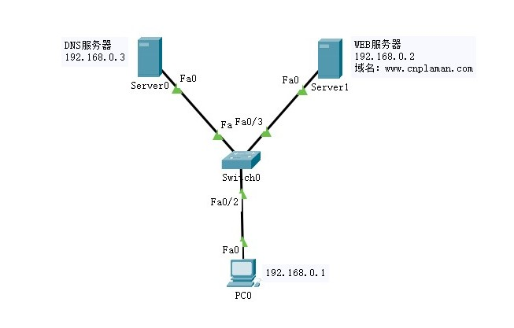
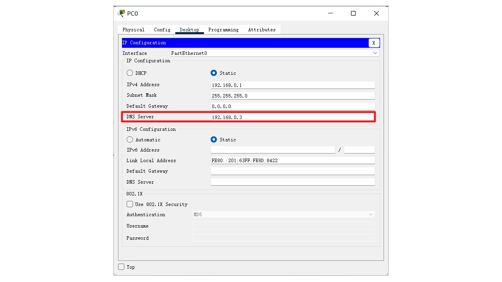
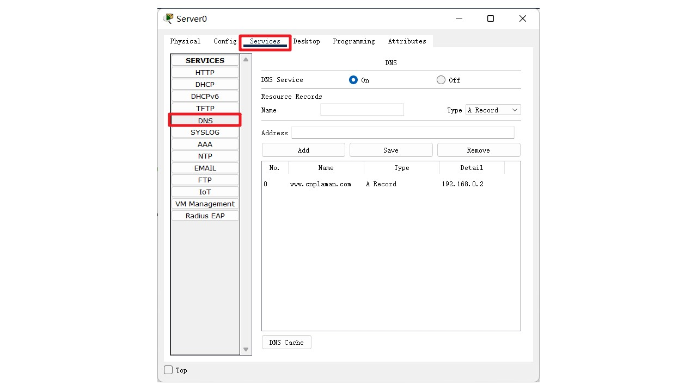
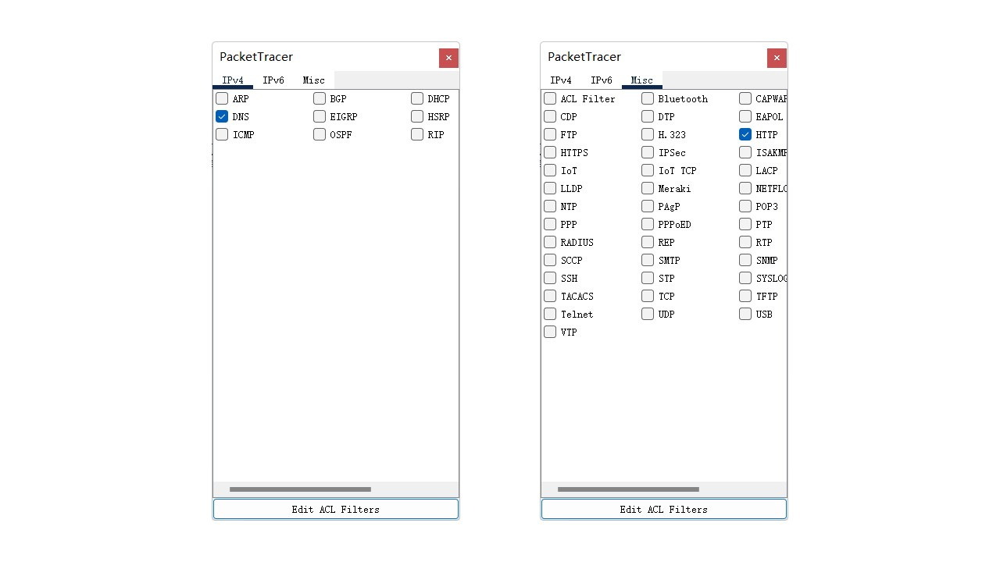
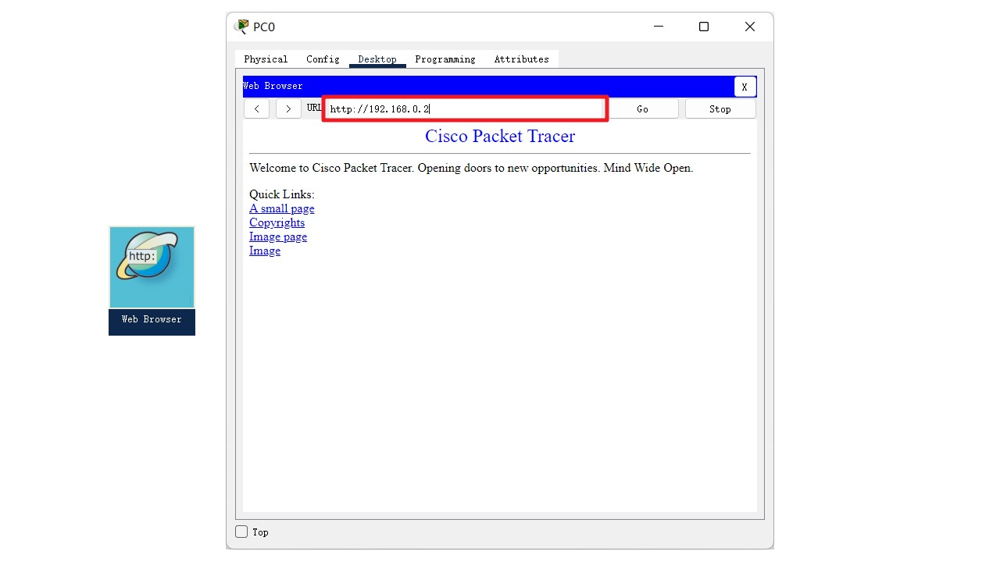

计算机网络实验
Network
- 实验学时
- 2
- 实验类型
- 验证型
- 实验题目
- 服务器综合运用 Server
- 实验目的
- 实验内容
- 实验器材
- 前置知识
- 实验步骤
- 网络拓扑

网络拓扑
- Host主机配置：IP地址 192.168.0.1；添加 DNS 服务器地址 192.168.0.2

配置主机
- WEB服务器配置：IP地址 192.168.0.2
- DNS服务器配置：配置IP地址 192.168.0.3；添加WEB服务器对应的域名信息，如 www.cnplaman.com

DNS服务器配置
- 测试网络连通性
- Host主机 → WEB服务器
- Host主机 → DNS服务器
- WEB服务器 → DNS服务器
- 单步测试数据报的发送过程
- 筛选协议，保留 HTTP、WEB
- 查看端口和协议运用情况

筛选协议
- Host主机访问/请求：打开主机的WEB浏览器；输入 www.cnplaman.com
- DNS服务器解析域名：www.cnplaman.com → 192.168.0.2
- WEB服务器响应：看到返回的WEB页面

WEB服务器响应
- 参考效果和参考命令
- 拓展与思考